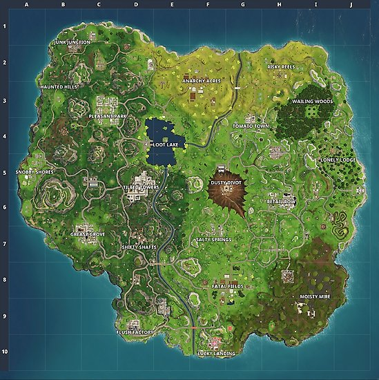
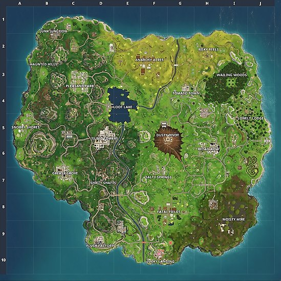

In total there are 20 different named locations.
This rural location is packed full of fields and farmyards, as well as a sprinkling of buildings which can often contain a chest or two. Rumour has it you're particularly likely to find extra ammo and a chest behind the northern-most house. All in all this is a very good place to start the gearing up process, with a little bit of everything on offer to get yourself kitted out. Check the barns, behind the haystacks, the houses nearby and even break down the silos as they sometimes contain chests. Just be aware that at least one or two other players have probably had the same idea as you...
Season 4's meteor crash-landed into what was previously known as Dusty Depot, and transformed it into Dusty Divot. Before it was an industrial area filled with loads of warehouses full of loot, but now it's a smoking crater that's got a curious little research station in the centre. You'll find "Hop Rocks" - consumable remnants of the meteor - that'll give you a temporary zero-gravity boost. In this state you'll be able to leap higher and avoid any form of fall damage.
Alongside Anarchy Acres this is another farm area in Fortnite: Battle Royale, located in the southern section of the map. Make sure you check all the buildings for loot, and check under the bridge as well - a chest often spawns here. This is also a good spot to pick up some metal, thanks to the nearby vehicles which can be harvested. You'll find a load more cars just to the south as well, and there's a good chance of picking up some chests from this secondary area as well.
Right down in the south-west corner of the map lies Flush Factory, which is more of an industrial area packed with buildings. While full of plenty of chests and loot, be aware that this is an incredibly popular landing spot so be careful. This is the kind of place you might want to head to after starting off nearby, when the initial rush has subsided and the pack has dispersed a little more There's lots to harvest here, so it's well worth a visit even if the bulk of the loot's been vacuumed up.
Greasy Grove is another residential zone, this time located towards the south-west of the overall map. As well as houses, it also has a restaurant and a gas station to rummage around in - the former is a bit of a magnet for early-game activity though, so be careful.
This gloomy little place is located just a little bit south from Junk Junction, with Pleasant Park just to the south once again. To get your hands on a decent selection of chests, we recommend having a good old rummage around inside the mausoleum that's located here. You should have no trouble finding something worth using in this musty old place, but keep an eye on the circle's position as you're right on the outer edge of map and could very well have a long distance to jog. It's also worth noting that you can climb to the top of the mausoleum and use it as a vantage point from which to scout out enemies or snipe them from afar if you've been lucky enough to snag a sniper.
This mashed-up wreckage zone is packed full of mangled cars, and is located in the north-west region of the map, not a million miles away from Haunted Hills. One of the nice things about this zone is that it contains plenty of materials to harvest (metal in particular), and you'll often find some decent loot and ammo by getting up high and scouting around the tops of the cars.
This secluded area contains plenty of huts - with plenty of chests - and provides a great starting point for the more survival-orientated player. You can also farm a decent amount of metal from this location, and don't forget to check out the tower as you'll often find a chest or two here. This tower also provides a nice vantage point in case the horde starts to descend from nearby - and the very popular - Retail Row.
As the name suggests, Loot Lake is a watery space, albeit one with a big fat mansion stuck in the middle of it. This house contains a huge amount of loot - up to four chests. Check the roof, the insides, and have a poke around in the nearby boats as well. Be warned that this is an incredibly popular landing spot, and if you are not a seasoned player you stand a very good chance of getting obliterated very quickly. You are also rather vulnerable while attempting to cross across the lake to get to the mainland, but if you are willing to risk it, make sure you crouch will doing so to significantly decrease your chances of detection. Another hot tip if you've committed to landing in Loot Lake - make sure you land right on top of the chests that spawn outside.
Located right on the Southern edge of the map, Lucky Landing's an East Asian themed zone that's characterised by a large Cherry Blossom in the center. It's a pretty small area comprised of tiny buildings that circle a larger town hall. While Lucky Landing looks gorgeous it's hardly bursting with loot. I'd only recommend this area if you're in Solos or Duos, but in a squad you're unlikely to find enough gear for everyone. I'd recommend also keeping an eye out for enemies when landing here as you'll be in close proximity from the off. Stay alert and grab a weapon as quickly as you can!
This dank and dirty swamp area is located near Fatal Fields in the south-east section of the map. It's a prime place to gather lots of wood, and there's a decent shot at finding a chest or two as well. It's also one of the less popular starting zones, so you stand a pretty good chance at getting geared up without being bothered too much. Do be careful when navigating the swamp as trudging through the thick mud will significantly decrease your movement speed and make you a prime target for any enemies nearby.
Pleasant Park is another location that's found in the north-west section of the map, and you should find plenty of looting opportunities in the many little houses that are dotted all around. It's a great spot for a quick clean-up. There are plenty of vantage points if you want to make a safe(ish) entry point while still having access to solid loot opportunities. Community wisdom suggests that parking yourself on top of the gas station is a very good option - you'll be able to do a quick scout of the area before heading into potential danger.
This retail complex area can be found towards the centre of the map and is a very popular place to get geared up nice and quickly. There are just so many opportunities to find good stuff here that it's incredibly tempting. Don't forget to mine the vehicles sprinkled around either. The problem is, you are going to face competition pretty early on, so getting tooled up is your absolute priority. One hot tip we've heard is that much of the loot is contained in the upper floors of each house, and so digging down through the roof is a faster method of getting at it.
Along with Dusty Divot, another new location introduced with the inception of Season 4 is Risky Reels. It's located in the North-Eastern corner of the map between Anarcy Acres and Wailing Woods. Have a wander around Risky Reels and you'll find it's a drive-thru theatre that's also fallen victim to a meteor strike. It's characterised by a gaping crater in the centre that's surrounded by burnt out vehicles.
This is a pretty small town area, but it also has a tower which is excellent for sniping people. Make sure you clean out every house when you get here, as there's a lot of pretty decent gear to be found for the inquisitive. Salty Springs is also in a central location, meaning it's a decent place to drop for players who want time to search for loot and move onto other areas without the circle ruining their chances.
Shifty Shafts can be found in the south-west section of the map, not a million miles away from Tilted Towers. This section is full of tunnels and buildings to loot, and has a generous spawn rate for chests as well. Close-range weapons are preferred here, as the spaces can be quite claustrophobic. It's important to keep your eyes peeled as you come into land at Shifty Shafts and look at where the competition's heading. You don't want to be caught by surprise in the tunnels, but alternatively you can set up the perfect ambush of your own if you plan ahead.
Snobby Shores is the upmarket region of the map, and features plenty of well-to-do houses just ripe for the robbing. Most of them have fencing as well, which provides some decent defensive opportunities if you need to take shelter. Rumour has it an underground shelter exists here. Look for the flat-roofed house towards the south, go inside, then smash the floor or the dresser to access this secret area. A handful of chests can spawn in this location, and it still flies under the casual community's radar.
Tilted Towers is easily the most popular landing spot in Fortnite: Battle Royale. This residential zone has plenty of tall buildings that are chock full of powerful loot. It goes without saying that this area is a hive of activity with so many floors, room, connectors and opportunities to build between the towers. Do be wary when landing here as it's hotly contested and you'll need to prepare for fights at every corner. For the best chance of survival you'll want to land and rush into one of the towers as soon as you can before searching for a weapon to defend yourself with. Don't forget to check the hidden tunnel by the gas station as it's often home to a lovely golden chest.
This is as pretty low-key area containing a restaurant and a gas station. You'll find it on the upper half of the map near Anarchy Acres and Dusty Depot. Scour the restaurant for items, and make sure you check behind the counter as well as you'll occasionally see a chest spawn. Cover the gas station next, and don't forget to harvest the cars for metal materials while you're here.
You'll find Wailing Woods up in the north-east section of the map, not all that far away from Tomato Town and Lonely Lodge. Note that it's extremely tricky to find your way around this zone, but it does make for an excellent defensive position. Look for the shipping containers in the south of this region, as you will very often be able to scoop up a fat pile of loot by having a thorough rummage around them. More excellent looting opportunities exist to the left of Wailing Woods - have a look in the gas station and buildings nearby. Keep your eyes peeled for a house that's been damaged. The basement of this place often contains a chest, ammo, and the whole of the house in general is a great source for early gearing. Search it from top to bottom before moving on.
Throughout the entire map there are a lot of secrets and cool features to be found.
Back to Top